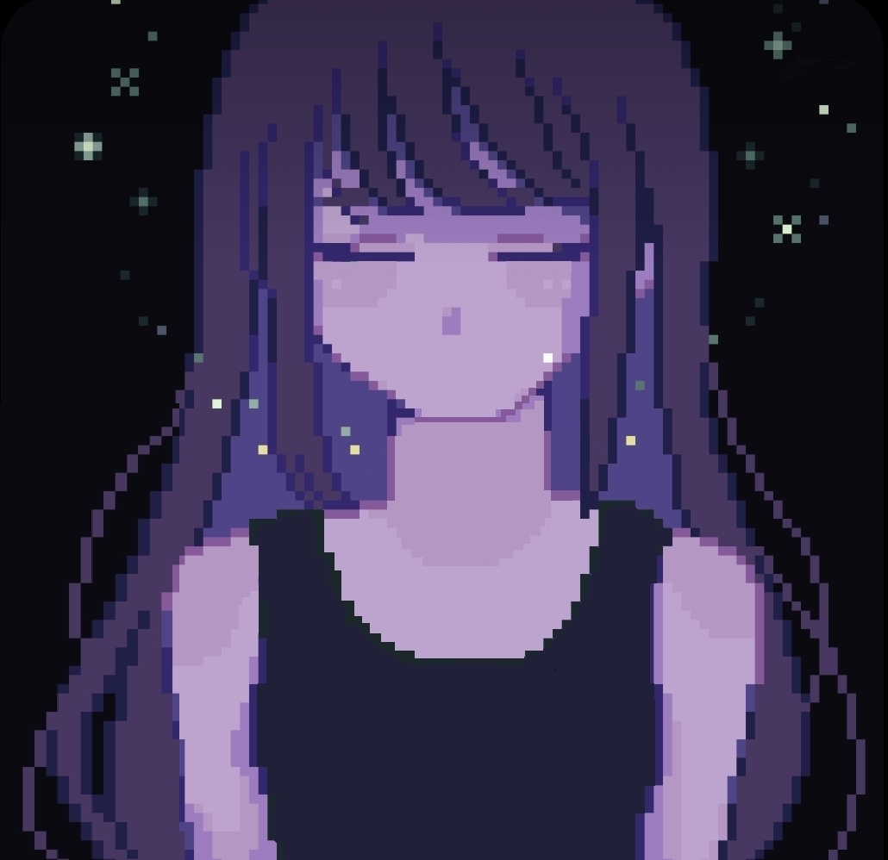
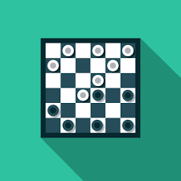
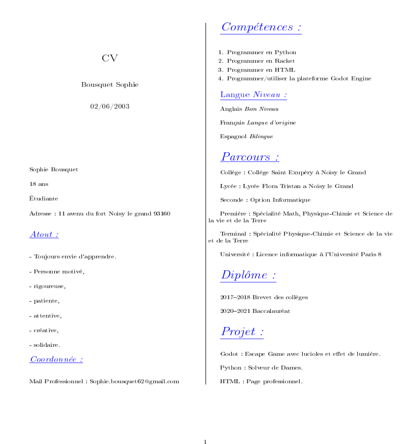

Bonjour et bienvenu sur ma page personnelle !
Tout d'abord, je vais me présenter. Je m'apelle Sophie Bousquet, j'ai actuellement 18 ans et je suis d'origine espagnole.
Je suis étudiante en première année en licence informatique à l'université Paris VIII. Mes ambitions d'avenir sont de travailler dans l'univers du jeu vidéo ou dans l'intelligence artificielle.
Je suis une personne très curieuse, qui a toujours envie d'apprendre. Personne motivé, rigoureuse, patiente, attentive, créative, solidaire.
J'ai quelques passions tel que le dessin, surtout de type manga, et le piano. J'aime beaucoup les jeux vidéo et les films de science-fiction. Mais ma plus grande passion ce sont les animaux, j'adore passer du temps avec eux et m'en occuper.
Mes projets :
Dans cette section nous allons retrouver tout les projets que j'ai fait et ceux à venir.
 Mes projets Godot :
Mes projets Godot :
Dans cette section nous allons retrouver les projets que j'ai fait sur la plateforme Godot.
Firefly Dreams

S’échapper de son propre rêve angoissant, c’est l’idée de jeux que nous avons eu. Un escape game en 2D avec 3 niveaux à passer qui met en avant une ambiance sombre. Pour pouvoir s’échapper, des lucioles nous aides à trouver le bon chemin.
Deux fins sont possibles : une où le jeu est gagné et l’autre où le jeu se fini sur une défaite. Le premier niveau consiste à se diriger vers chaque lucioles qui apparait pour avoir accès à la sortie, pour le deuxième il faut suivre le chemin de lumière et enfin pour le troisième il faut suivre la direction donnée par les lucioles pour accéder à la sortie finale.

Cependant si on décide de ne pas suivre la flèche indiquée par les lucioles au troisième niveau et qu’on continue d’avancer sans descendre l’échelle, le joueur retournera sur ses pas sans possibilité de revenir au troisième niveau et perdra.

Effet de lumière :
Notre projet, « firefly dreams » est basé en partie sur les effets de lumière qui sont centrés principalement sur les lucioles. Pour cela nous avons utilisé le nœud light 2D dans les scènes de lucioles tel que luciole 1, luciole 2, luciole 3, luciole 4, lot de luciole 1,2 et 3 et flèche de luciole à laquelle on a rajouté une texture de lumière. Nous avons aussi modifier la couleur de la light 2D sur les chandeliers afin de le mettre en rouge. Pour faire ressortir la lumière, on a utilisé un canvasmodulate dans le main, ce qui nous a permis d’assombrir la scène.
Collision :
Pour les collisions on a utiliser le nœud Staticbody2D auquel on a rajouter un nœud enfant de type collisionshape2D. On a utilisé les collisions pour les bords d’image, les murs et les ligne imaginaire dans les différente scène de jeu (notre jeu est vu de face donc afin que notre personnage ne marche pas sur les murs, on a du mettre des lignes imaginaire). Pour être plus précis, nous avons utilisé (dans le deuxième niveau) Collisionpolygonshape2D pour sélectionner exatement l’élément où l’appliquer.
De plus, les collisions sont aussi présentes dans les scènes de luciole de type Area 2D. Elles permettent de faire disparaitre une luciole ou un lot de luciole (exemple: luciole 1) losque le personnage rentre en collision avec et d’en faire apparaitre une autre (exemple : luciole 2).
De même, lorsque le personnage rentre en collision avec la porte cela nous permet de nous déplacer d’une scène à l’autre.
Pour les animations de déplacement on a utilisé la fonction get input; il y a donc walk left/right (touche q et d), up/down (touche z et s), aussi à la fin du jeu il y a l’animation pour descendre l’échelle (touche E). Pour que la caméra suive le personnage lors de ses déplacements, on utilise fonction physic process.
Toute la partie graphique, animation, décors ainsi que la musique ont été créés par nous-même.
Ce jeu a été créé en collaboration avec ma camarade Dounia Hullot.
Pour plus d'informations et d'explications voici notre rapport sur le jeu :
Rapport Firefly Dreams
Voici le lien pour télécharger les fichiers de notre jeu :
Firefly Dreams
 Mes projets Python :
Mes projets Python :
 Solveur de Dames
Mon premier projet python est un solveur de Dames qui a pour but de faire jouer deux IA entre elles.
Le projet est en cours de préparation, pour le moment nous avons créé la partie graphique à l'aide de Tkinter qui nous a permis de créer le plateau de dames et placer les différents pions sur ce même plateau.

Nous sommes actuellement entrain de créer les déplacements des pions afin que le pion glisse sur la case choisie.
Puis nous allons créer les IA en utilisant les algorithmes MinMax et éventuellement l'algorithme élagage alpha-bêta.
Dans cette section je vais vous présenter mon parcours, c'est-à-dire les différentes écoles où je suis aller.
Tout d'abord, je suis allée au collège Saint Exupéry à Noisy-le-Grand où j'ai obtenu mon Brevet des collèges.
Par la suite, je suis allée au lycée Flora Tristan à Champs-sur-Marne.
En seconde j'ai appris l'informatique grâce à une option qu'il y avait.
Puis en premiere j'ai pris les spécialités Mathématiques, Sciences de la vie et de la Terre et Physique-Chimie.
Enfin, en Terminal j'ai décidé de garder les spécialités Physique-Chimie et Sciences de la vie et de la Terre.
Actuellement je suis en licence informatique à l'université Paris VIIIs.

Voici le lien pour télécharger mon Cv en PDF:
Cv en PDFVoici le lien pour télécharger mon Cv en latex :
Cv en LatexMail professionnel : Sophie.bousquet62@gmail.com